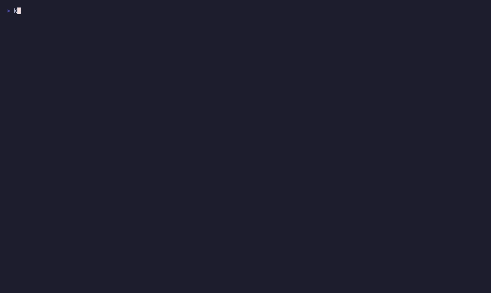
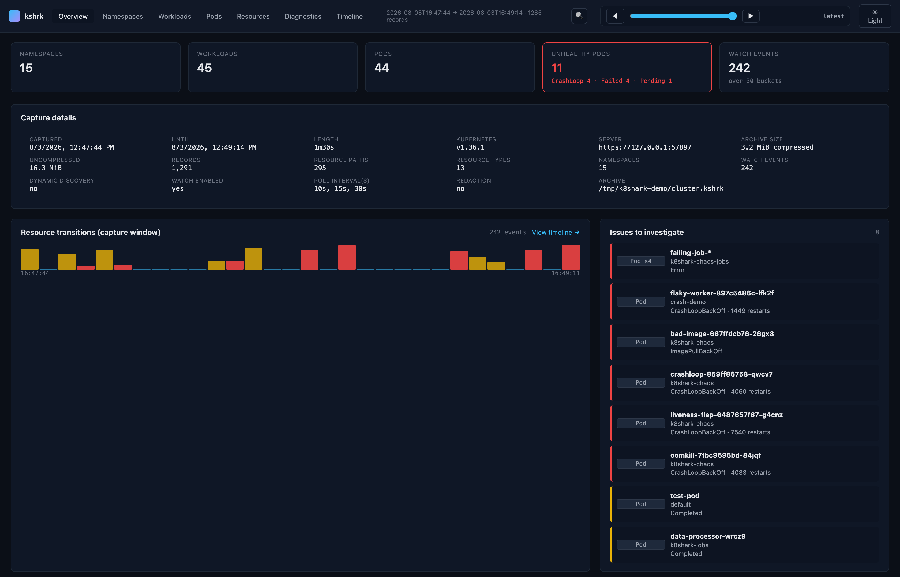

Like Wireshark, but for Kubernetes.
Capture a Kubernetes cluster's state over time into a single portable archive, then replay it
through a built-in mock API server — query a customer's environment with kubectl and a
web dashboard, with no live cluster access required.
# Homebrew brew install phenixblue/tap/k8shark # or with Go go install github.com/phenixblue/k8shark@latest

kshrk capture polls the Kubernetes API at set intervals and packages every response into a single .khsrk archive.
kshrk open starts a local mock HTTPS API server and writes a kubeconfig — point kubectl at it and explore.
Browse the capture in the built-in web dashboard, time-travel through the window, and diff snapshots — all offline.

k8shark is under active development. Until the API and archive format stabilize, prefer the latest release for compatibility fixes and current behavior.